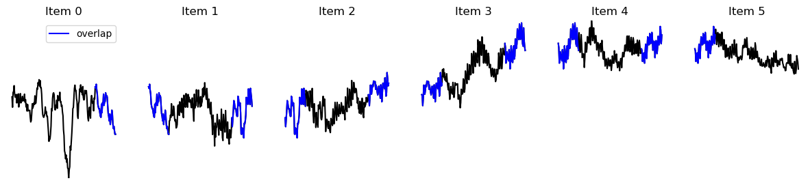

Pytorch Dataset Integration Demo#
%cd ..
/raid/localscratch/qfebvre/oceanbench
%pip install torch --index-url https://download.pytorch.org/whl/cpu
Looking in indexes: https://download.pytorch.org/whl/cpu
Requirement already satisfied: torch in /home3/datahome/qfebvre/conda-env/oceanbench/lib/python3.10/site-packages (2.0.0+cpu)
Requirement already satisfied: filelock in /home3/datahome/qfebvre/conda-env/oceanbench/lib/python3.10/site-packages (from torch) (3.12.0)
Requirement already satisfied: typing-extensions in /home3/datahome/qfebvre/conda-env/oceanbench/lib/python3.10/site-packages (from torch) (4.5.0)
Requirement already satisfied: sympy in /home3/datahome/qfebvre/conda-env/oceanbench/lib/python3.10/site-packages (from torch) (1.11.1)
Requirement already satisfied: networkx in /home3/datahome/qfebvre/conda-env/oceanbench/lib/python3.10/site-packages (from torch) (3.1)
Requirement already satisfied: jinja2 in /home3/datahome/qfebvre/conda-env/oceanbench/lib/python3.10/site-packages (from torch) (3.1.2)
Requirement already satisfied: MarkupSafe>=2.0 in /home3/datahome/qfebvre/conda-env/oceanbench/lib/python3.10/site-packages (from jinja2->torch) (2.1.2)
Requirement already satisfied: mpmath>=0.19 in /home3/datahome/qfebvre/conda-env/oceanbench/lib/python3.10/site-packages (from sympy->torch) (1.2.1)
Note: you may need to restart the kernel to use updated packages.
import torch
import oceanbench._src.datasets.base as xrda
import oceanbench._src.geoprocessing.validation as val
from xrpatcher import XRDAPatcher
import matplotlib.pyplot as plt
import itertools
import xarray as xr
import collections
import numpy as np
import importlib
importlib.reload(xrda)
<module 'oceanbench._src.datasets.base' from '/raid/localscratch/qfebvre/oceanbench/oceanbench/_src/datasets/base.py'>
Torch dataset wrapper of the XRDAPatcher#
class XrTorchDataset(torch.utils.data.Dataset):
def __init__(self, batcher: XRDAPatcher, item_postpro=None):
self.batcher = batcher
self.postpro = item_postpro
def __getitem__(self, idx):
item = self.batcher[idx].load().values
if self.postpro:
item = self.postpro(item)
return item
def reconstruct_from_batches(self, batches, **rec_kws):
return self.batcher.reconstruct([*itertools.chain(*batches)], **rec_kws)
def __len__(self):
return len(self.batcher)
1D - 1 variable, Patching Example#
# Preparing the training data
raw_data = xr.tutorial.load_dataset("air_temperature")
TrainingItem = collections.namedtuple('TrainingItem', ('air',))
data = (
raw_data[[*TrainingItem._fields]].isel(lon=5, lat=5, time=slice(0, 1000))
.sortby('time')
.to_array().transpose('variable', 'time').load()
)
# Instantiate the patching logic
patches = dict(time=200)
strides = dict(time=160)
batcher = xrda.XRDAPatcher(
da=data,
patches=patches,
strides=strides,
check_full_scan=True
)
# Instantiate the
torch_ds = XrTorchDataset(batcher, item_postpro=TrainingItem._make)
dataloader = torch.utils.data.DataLoader(torch_ds, batch_size=4, shuffle=False)
items = [torch_ds[i] for i in range(len(torch_ds))]
ex_item = items[0]
batch = next(iter(dataloader))
print(f"Number of items: {len(torch_ds)}")
print(f"Item shape: {ex_item.air.shape=}")
print(f"Batch shape: {batch.air.shape=}")
Number of items: 6
Item shape: ex_item.air.shape=(200,)
Batch shape: batch.air.shape=torch.Size([4, 200])
Visualizing the input data#
data.plot(figsize=(10, 3))
[<matplotlib.lines.Line2D at 0x7f0e496057b0>]
Visualizing the items with the overlaps#
fig, axs = plt.subplots(1, 6, figsize=(15, 3))
for i, (item, ax) in enumerate(zip(items, axs)):
ax.plot(item.air, 'k',)
l = None
if i > 0:
l, = ax.plot(range(40), item.air[:40], 'b-', label='overlap')
if i < 5:
l, = ax.plot(range(160, 200), item.air[160:], 'b-', label='overlap')
if i == 0:
ax.legend(handles=[l])
ax.set_title(f'Item {i}')
ax.set_ylim([data.min(), data.max()])
ax.set_xticks([], labels=None)
ax.set_axis_off()
ax.set_yticks([], labels=None)

2D Patching Example#
# Preparing the training data
raw_data = xr.tutorial.load_dataset("eraint_uvz")
TrainingItem = collections.namedtuple('TrainingItem', ('u', 'v'))
data = (
raw_data[[*TrainingItem._fields]].isel(longitude=slice(None, 400), latitude=slice(None, 200), month=0, level=0)
.sortby('longitude').sortby('latitude')
.to_array().transpose('variable', 'latitude', 'longitude').load()
)
# Instantiate the patching logic
patches = dict(longitude=100, latitude=50)
batcher = XRDAPatcher(
da=data,
patches=patches,
strides=patches, # No overlap
check_full_scan=True
)
# Instantiate the
torch_ds = XrTorchDataset(batcher, item_postpro=TrainingItem._make)
dataloader = torch.utils.data.DataLoader(torch_ds, batch_size=4, shuffle=False)
items = [torch_ds[i] for i in range(len(torch_ds))]
ex_item = items[0]
batch = next(iter(dataloader))
print(f"Item shape: {ex_item.u.shape=}, {ex_item.v.shape=}")
print(f"Batch shape: {batch.u.shape=}, {batch.v.shape=}")
Item shape: ex_item.u.shape=(50, 100), ex_item.v.shape=(50, 100)
Batch shape: batch.u.shape=torch.Size([4, 50, 100]), batch.v.shape=torch.Size([4, 50, 100])
print(f"Dataset length is {len(torch_ds)}, \n Number of patches per dims are {torch_ds.batcher.da_size}")
Dataset length is 16,
Number of patches per dims are OrderedDict([('variable', 1), ('latitude', 4), ('longitude', 4)])
Vizualizing the patch process#
Input data:#
data.plot(row='variable', figsize=(5, 5))
<xarray.plot.facetgrid.FacetGrid at 0x7f0e3645fdf0>
Items drawn from the torch dataset#
def plot_patches(items_to_plot, nbaxes=(4, 4)):
fig, axs = plt.subplots(*nbaxes, figsize=(5, 2.5))
for item, ax in zip( items_to_plot, [*itertools.chain(*reversed(axs))]):
ax.imshow(item, cmap='RdBu_r', vmax=70, vmin=-70, origin='lower')
ax.set_xticks([], labels=None)
ax.set_axis_off()
ax.set_yticks([], labels=None)
print("Patches of u")
plot_patches([i.u for i in items] )
plt.show()
print("\n\nPatches of v")
plot_patches([i.v for i in items])
Patches of u
Patches of v
Reconstructing the amplitude of the speed from the patches#
rec_ds = torch_ds.reconstruct_from_batches((np.sqrt(batch.u**2 + batch.v**2) for batch in dataloader), dims_labels=['latitude', 'longitude'])
rec_ds.plot(figsize=(5, 2))
100%|█████████████████████████████████████████████████████████████████████████████████████████████████████████████████| 16/16 [00:00<00:00, 157.73it/s]
<matplotlib.collections.QuadMesh at 0x7f0e34fd3f40>
Reconstructing the laplacian (~ vorticity) from the patches#
rec_ds = torch_ds.reconstruct_from_batches(((np.diff(batch.u, axis=1, prepend=0) + np.diff(batch.v,axis=2, prepend=0)) for batch in dataloader), dims_labels=['latitude', 'longitude'])
rec_ds.plot(figsize=(5, 2))
100%|█████████████████████████████████████████████████████████████████████████████████████████████████████████████████| 16/16 [00:00<00:00, 161.03it/s]
<matplotlib.collections.QuadMesh at 0x7f0e346bbd30>
We see that the border of the patches creates artifact during the derivative: We can fix it by using overlapping patches
Solution with overlapping patches (stride smaller than patch size)#
patches = dict(longitude=100, latitude=50)
strides = dict(longitude=60, latitude=30)
batcher = XRDAPatcher(
da=data, patches=patches, strides=strides, check_full_scan=True
)
rec_weight = np.ones((50, 100)) # Weight for each pixel of one patch
rec_weight[:10] = 0 # do not use the border pixels during the reconstruction
rec_weight[:, :20] = 0
rec_weight[-10:] = 0
rec_weight[:, -20:] = 0
# Instantiate the
torch_ds = XrTorchDataset(batcher, item_postpro=TrainingItem._make)
dataloader = torch.utils.data.DataLoader(torch_ds, batch_size=4, shuffle=False)
rec_ds = torch_ds.reconstruct_from_batches(
((np.diff(batch.u, axis=1, prepend=0) + np.diff(batch.v,axis=2, prepend=0)) for batch in dataloader),
dims_labels=['latitude', 'longitude'],
weight=rec_weight,
)
rec_ds.plot(figsize=(5, 2))
100%|█████████████████████████████████████████████████████████████████████████████████████████████████████████████████| 36/36 [00:00<00:00, 159.52it/s]
<matplotlib.collections.QuadMesh at 0x7f0e34795c90>
print("Patches of u with overlap")
plot_patches([torch_ds[i].u for i in range(len(torch_ds))], (6,6))
plt.show()
print("\n\nPatches of u with reconstruction mask")
plot_patches([torch_ds[i].u * rec_weight for i in range(len(torch_ds))], (6,6))
Patches of u with overlap
Patches of u with reconstruction mask